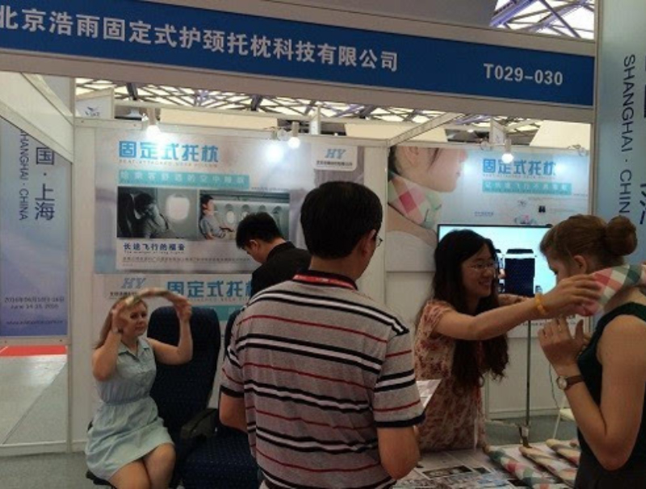
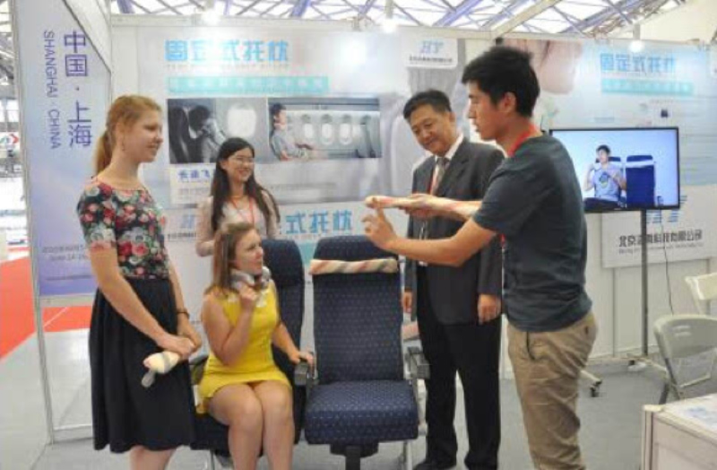
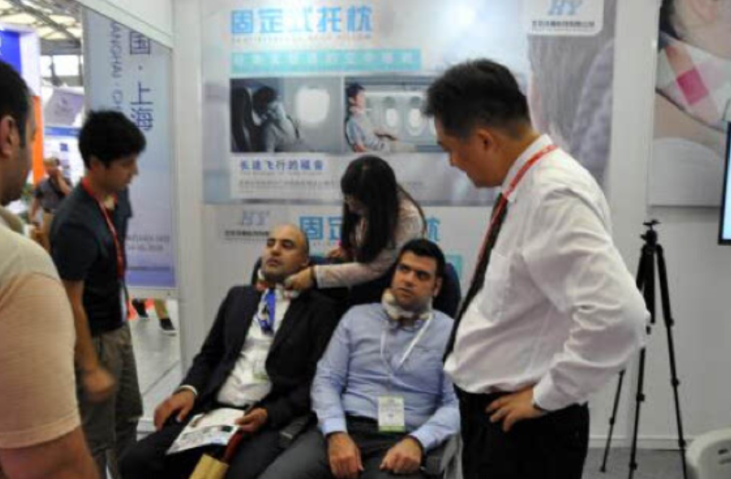

26家媒体报道公司参展情况
发布时间：2016-06-18
空中睡眠神器助力“健康航空”产业变革
2016年6月14日-16日，亚洲地区航空服务领域唯一采购盛会——2016第五届上海国际航空服务产业博览会在上海新国际博览中心盛大开幕，本 届航博会吸引了来自全球四十多个国家和地区的数千家航空服务领域优秀供应商和数万专业买家参会，展出涉及航空食品及饮料、航空用品及服务、航空工程及内饰 等六大领域的新产品、新技术，北京浩雨固定式护颈托枕科技有限公司展出的一款已获得国家专利的空中睡眠神器--固定式护颈托枕，引起了业界的广泛关注，已 与数家航空公司达成了合作意向，有望尽快获得广泛应用，并在后期助力“健康航空”的产业变革。

空中飞行时在座椅上睡眠困难是一个长期困扰乘客的老问题，一直未能得到有效解决。机舱内空间狭小，长途飞行时的久坐，特别是不正确坐姿情况下的睡眠，会对颈椎形成极大的压力，人体的血液循环系统、呼吸系统、颈肩腰等部位的肌肉、骨骼都会受到影响从而损坏脊柱的健康。在飞机上不良坐姿、睡姿所产生的疲劳，也是引起旅客急躁情绪的原因之一，并会造成邻座乘客的不适，这些从侧面对客舱服务带来更多的抱怨。机舱内饰品专家----南昌航空大学航空产品系统设计研究所所长徐江华博士表示：“包含波音公司在内的各大飞机制造商和各航空公司也都在积极寻找和探索解决这一问题的方案”

为了满足市场的需求，浩雨科技公司组织研发人员，根据人体生理特征进行了多次实验，并征求了运动医学专家的意见和建议，研发出了固定式护颈托枕。与旅客自带的U型枕、颈托产品相比，固定式护颈枕是用尼龙搭扣固定在飞机座椅上的，它结合了U型枕的柔软性和颈托的支撑性及厚薄度小的优点，设计巧妙、结构简单，能够适应各种款式的椅背，既不会影响乘客正常使用座椅，又彻底解决了人们乘坐飞机时在座椅上休息身体不受控倾斜的问题，目前该研发成果已经获得了国家实用新型专利证书。

固定式护颈托枕仅中间一点与座椅固定，即解决了睡姿倾斜的问题，又为乘客头部保留了一定幅度的摆动空间，不会造成束缚感。当飞机产生颠簸时，固定式托枕的尼龙扣产生一定缓冲作用后会自动脱开。参加了现场体验的许多航空界业内人士纷纷表示：“如果机舱内的座椅上能配置上这种固定式护颈托枕，在狭小的座舱空间内睡眠将变成一件极其简单的事情，将会极大地改善乘客长途飞行的舒适度，提高客舱服务的满意度。”
浩雨科技公司魏新民董事长介绍说：“随着固定式护颈托枕的逐步普及，今后可在经过严格安全检测的情况下，在固定式护颈托枕内设置传感器，在乘客睡眠状态下采集脉搏、呼吸等生命信息，再联合体检机构、健康管理等第三方机构为乘客提供空中体检、康复咨询等医疗服务，提升航空服务水平，形成“健康航空”的产业概念，引领行业的发展和变革。”